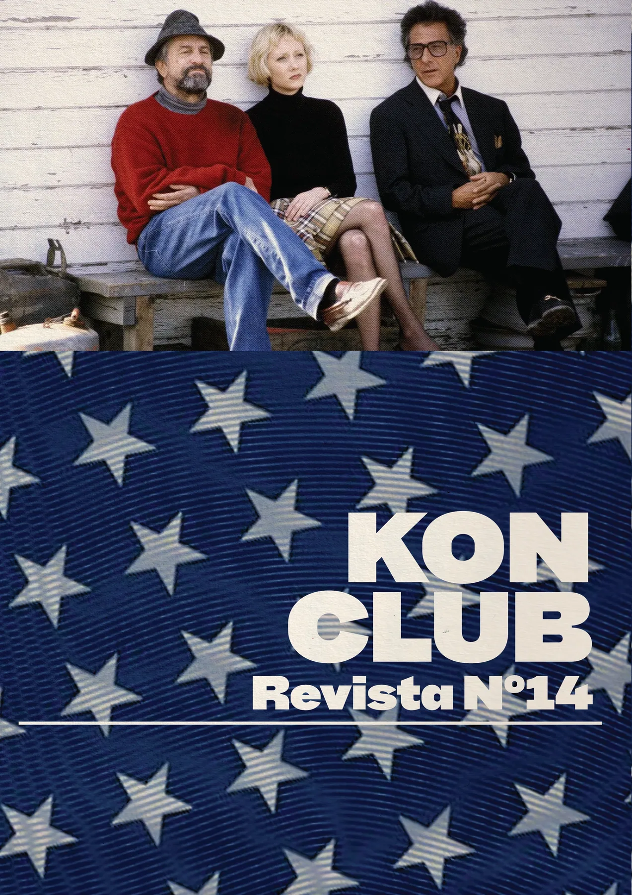
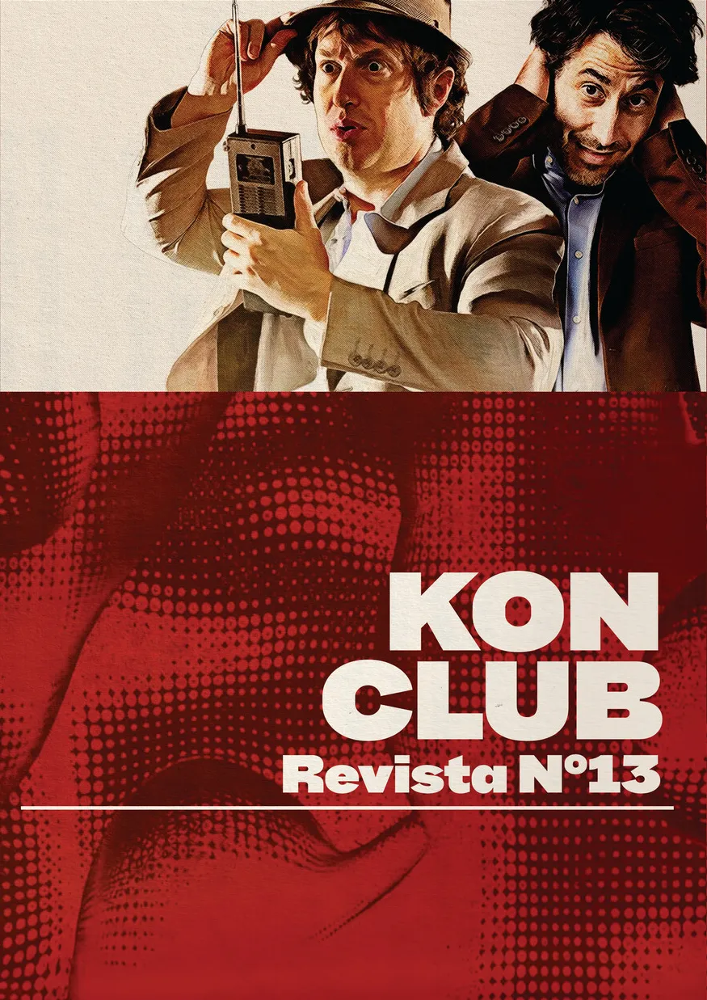

WAG THE DOG
REVISTA N.º 14 · 8 PÁGINAS

LA CASA LOBO ×
THE ROCKY HORROR PICTURE SHOW
Vemos películas que nos gustan, armamos fanzines y compartimos noches de juegos, charlas, música y otras cosas. Un club hecho para encontrarnos del otro lado de la pantalla.
CONOCÉ EL CLUB ↗Los dos números más recientes del club. Leé las revistas con animación de hojas o bajá el pliego para imprimirlas en casa.
HECHAS POR EL KON, PARA EL KON
REVISTA N.º 14 · 8 PÁGINAS

REVISTA N.º 13 · 8 PÁGINAS
¿BUSCÁS OTRA EDICIÓN? ENTRÁ A LA FANZINOTECA: ESTÁN LOS 14 NÚMEROS PUBLICADOS.
VER TODA LA FANZINOTECA ↗